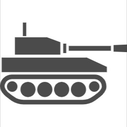

メンバー紹介

換気扇
好きな食べ物
A.寿司
好きなデジタルゲーム
A.[トビーフォックス]アンダーテール
好きなアナログゲーム
A.[Engames]キャンバス
好きな言葉
A.忘己利他
持っている技術
A.プログラミング、ドット少々、企画力まとめ力少々
担当
A.総括、プログラマ
意気込み
A.PC周辺とアメトリンの守り神。皆さんの楽しみをどんどん回せるように頑張ります。

和倉
好きな食べ物
A.刺身、天ぷらなど
好きなデジタルゲーム
A.[Eugen Systems]Wargame: Red Dragon
好きなアナログゲーム
A.（物によるけど）人狼、人生ゲーム
好きな言葉
A. 今のところなし
持っている技術A.ベーシスト、歴史好き
担当
A.書類、第三者目線
意気込み
A.サポートで頑張ります！！

win dred
好きな食べ物
A.ポテチ（一番好きな味はのりしお）
好きなデジタルゲーム
A.[任天堂]ロックマンシリーズ（ゼロシリーズが一番好き）
好きなアナログゲーム
A.トランプ遊び（7並べ,ピラミッド）
好きな言葉
A.情けは人の為ならず
持っている技術
A.プログラミング、暗記
担当
A.ルール調整、プログラマ
意気込み
A.ルール調整ってムズいよね、実質じゃんけんの先行げーとかそんなのは絶対作らないよう頑張ります。

未定の狂気
好きな食べ物
A.黄金の蜂蜜酒
好きなデジタルゲーム
A.[ブリザード・エンターテイメント]オーバーウォッチ2
好きなアナログゲーム
A.trpg（アナログと言っていいのか）
好きな言葉
A.決定的成功（クリティカル）
持っている技術
A.trpgのシナリオ作成
担当
A.考案、テストプレイ要員
意気込み
A.ぼちぼち頑張る